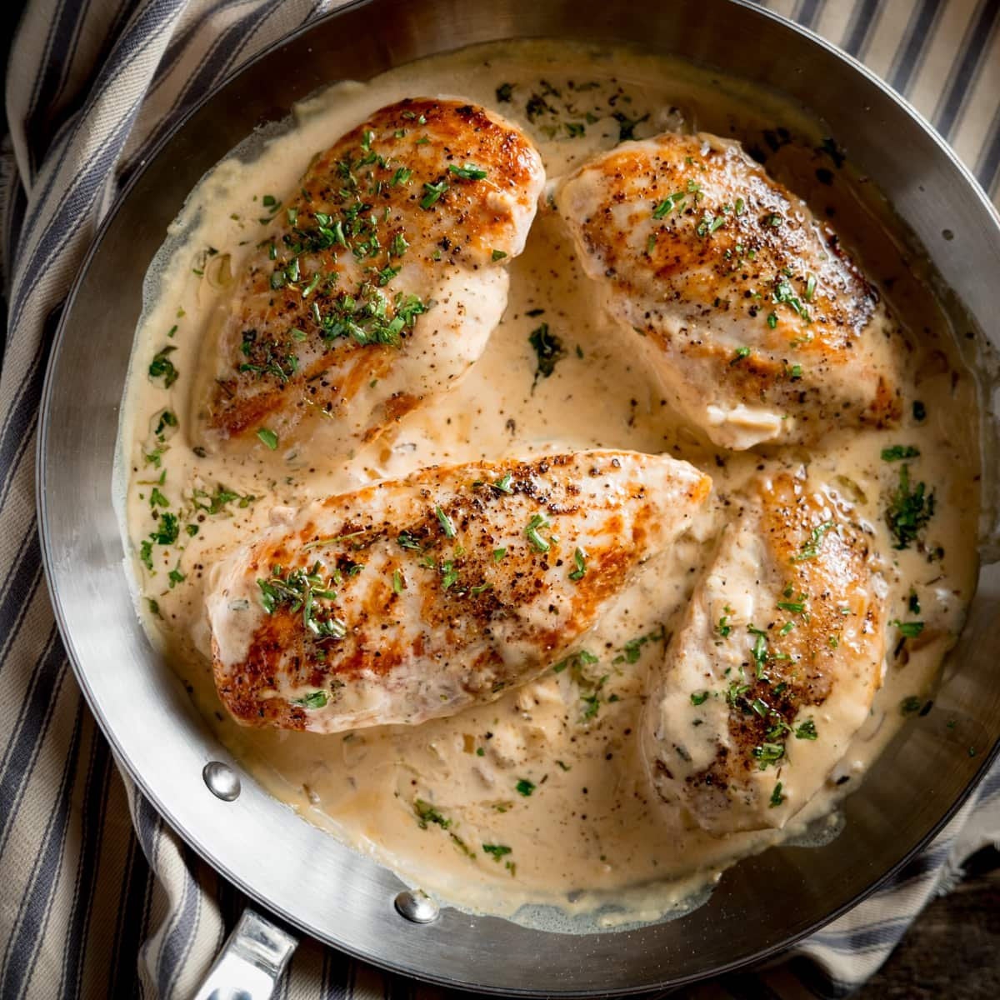

Home
Roasted Tarragon Chicken With Potatoes

This tarragon chicken is a perfect intermediate recipe to test your skills in the kitchen. The herby garlicky chicken paired with a tarragon pan sauce makes for a fantastic weeknight meal!
Ingredients you will need:
- 2 Skin-on Chicken Breasts
- 1 Half Onion
- 2 Potatoes
- 1 Garlic Bulb, cut in half horizontally
- 1 Tbs Olive Oil
- 1 Cup Chicken Stock
- 2 Tbs Tarragon, Chopped
- 1 Bunch Thyme
- 4 Tbs Unsalted Butter
- Preheat oven to 425F. Add oil to the pan, dice potatoes and add to an oven safe skillet on medium-high heat. Dice the onion while the potato is frying and cook until soft. Once the onions are soft, add the garlic and thyme.
- Pat the chicken dry and add directly on top of the vegetables in the pan. Reduce the heat to 400F and roast for 55 minutes or until golden cooked through (internal temp should register 165F)
- Remove the pan from the oven and set contents aside. Put chicken stock in the pan over medium heat and bring to a simmer. Add tarragon and whisk in butter a few pieces at a time until it starts to thicken. Let simmer for a few minutes until desired texture. Season with salt and pepper to taste.